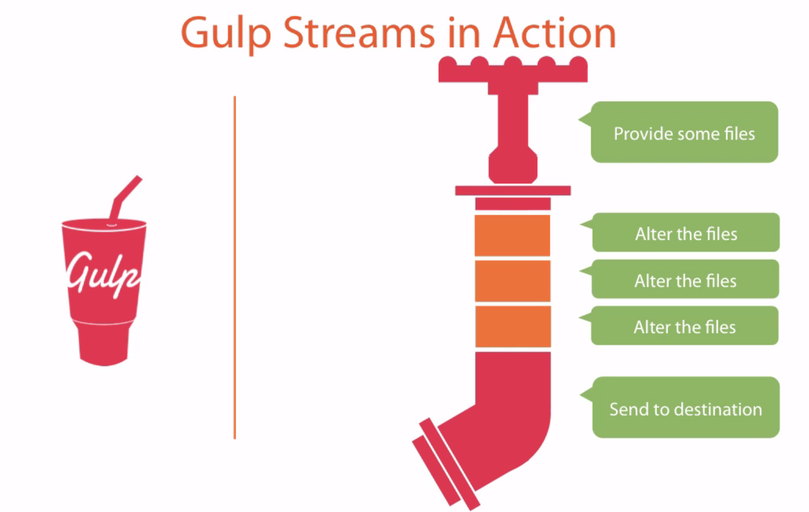

Strengthening Your Build Flow with Gulp.js
Presented by Jeremy A. Cantu
Who am I?
Texas A&M Graduate
Graduated in 2015 with a degree in Computer Science
Software Developer
at Dell

So what is Gulp?

Answer:
Streaming build system, using Node.js file manipulation to operate as an automated JavaScript task runner
Why should you care about gulp?
Because repeating a process gets old, fast
Testing and Linting
===
Code Quality
Streamlined Build Systems
===
Development Quality
Minification and Concatenation
===
Better Code Delivery
Set Up
Prerequisite: You must have Node.js installed on your machine to use Gulp
Three simple steps
#1 - Install Gulp globally
$ npm install gulp -g
Intermediary Step - Initialization
$ npm init
#2 - Install Gulp to your project's 'node_modules' and save as a developer dependency
$ npm install gulp --save-dev
#3 - Create your gulpfile.js
What goes in a gulpfile?
Basic Gulpfile.js
// grab our gulp package
var gulp = require('gulp');
// declare a gulp task
gulp.task('default', function() {
// run task
});
Gulp Syntax
Define your Gulp tasks with 'gulp.task'
gulp.task('name', ['dependencies'], function() {
// run task 'name' with dependencies
});
Point to the files in your application that you want to 'pipe' to a particular directory via 'gulp.dest' using 'gulp.src'
gulp.src('public/scripts/*.js').pipe(gulp.dest('dist'));
Monitor a grouping of files in your application, and run defined tasks using 'gulp.watch'
gulp.watch('source/scripts/*.js', ['lint']);
How can Gulp help you?
JavaScript Linting...
In Three Simple Steps

Step One
Install Gulp Eslint
$ npm install gulp-eslint --save-dev
Step Two
Add tasks to gulpfile.js
var gulp = require('gulp');
var lint = require('gulp-eslint');
// linting task
gulp.task('lint', function() {
return gulp.src('source/scripts/*.js')
.pipe(lint({config: 'eslint.config.json'}))
.pipe(lint.format());
});
// watch task for changes
gulp.task('watch', function() {
gulp.watch('source/scripts/*.js', ['lint']);
});
Step Three
Set default Gulp tasks and run
// default gulp tasks
gulp.task('default', ['watch'], function () {});
$ gulp
Minifying and concatinating assets...
In Three Simple Steps
˙ ͜ʟ˙
Step One
Install Gulp Packages
$ npm install gulp-concat gulp-rename gulp-imagemin --save-dev
Step Two
Add tasks to gulpfile.js
var gulp = require('gulp');
var imagemin = require('gulp-imagemin');
var rename = require('gulp-rename');
var concat = require('gulp-concat');
// minifying scripts task
gulp.task('minify', function() {
return gulp.src('source/scripts/*.js')
.pipe(concat('bundled.js'))
.pipe(rename({ suffix: '.min' }))
.pipe(gulp.dest('dist/scripts'))
});
gulp.task('watch', function() {
gulp.watch('source/scripts/*.js', ['minify']);
});
Step Three
Set default Gulp tasks and run
// default gulp tasks
gulp.task('default', ['watch'], function () {});
$ gulp
Live-Reload Demo Using Browser-Sync

Etc., etc...
- Processing SASS and LESS
- Autoprefixing vendor prefixes in CSS
- Caching templates in AngularJS
Other JavaScript Build Tools
Grunt

Webpack

Node Package Manager